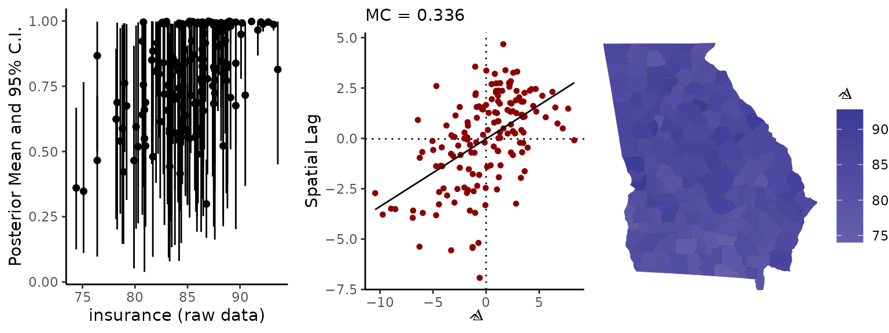
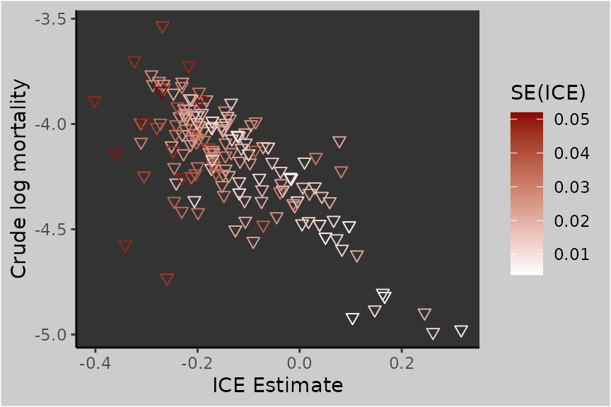

Working with American Community Survey data
Connor Donegan
September 13, 2021
Source:vignettes/spatial-me-models.Rmd
spatial-me-models.RmdThis vignette introduces users to the spatial measurement error (ME) models implemented in the geostan package (Donegan, Chun, and Griffith 2021; Donegan 2021). These models are particularly appropriate for working with American Community Survey (ACS) data and other large, government-backed surveys.
A premise of this methodology is that the survey includes a systematic spatial sampling design (i.e., the sampling procedure was stratified by areal unit, whether they be block groups, counties, or states).
Getting started
From the R console, load the geostan and ggplot2 packages.
The line data(georgia) loads the georgia data set from the geostan package into your working environment. You can learn more about the data by entering ?georgia to the R console.
ICE data
This vignette will make use of the index of concentration at the extremes (ICE) (Massey 2001). The ICE is the difference between the proportion of the population residing in a high income households and the proportion in low income households: \[\text{ICE} = \text{Proportion Rich} - \text{Proportion Poor,}\] where “rich” and “poor” are defined as the top and bottom quintiles of the US household income distribution (\(< \$20,000\) and \(>= \$120,000\)), respectively. It ranges from -1, for an entirely impoverished population, to 1, for an entirely wealthy population.
In this vignette, we will examine the ICE standard errors and build a probability model for the actual ICE values. The purpose of the vignette is to provide a guide to critically evaluating both your data and the ME model.
Examining the standard errors directly is informative, but not quite enlightening1:
sp_diag(georgia$ICE.se, georgia, name = "SE(ICE)")
This shows that there are strong spatial patterns in the reliability of the estimates. For continuous measures like the ICE, it is helpful to scale the standard errors by the scale of the data. Using the median absolute deviation (MAD) is a good option:
## [1] 0.126393## [1] 0.09241624
scaled_se <- georgia$ICE.se / mad.ice
ggplot() +
geom_histogram(aes(scaled_se),
col = 'gray50',
binwidth = 0.05
)We can see more clearly that sampling error may be adding a considerable amount of noise to the data and that a number of these estimates are not particularly reliable.
Modeling errors of observation
The unknown errors, \(\delta_i\), are defined as the difference between the survey estimate, \(z_i\), of some variable, and that variable’s actual value over the same time period, \(x_i\): \[\delta_i = z_i - x_i.\] For present purposes, we will take for granted the high quality of the Census Bureau’s systematic spatial sampling design (on spatial sampling, see Chun and Griffith 2013), and thus, we do not expect there to be any spatial pattern to the errors, \(\delta_i\).2
Using Bayes’ theorem and the information at our disposal, we can create a probability distribution for these errors. Since \(\delta_i\) is a simple function of \(z_i\) and \(x_i\), we need to reason about \[p(\boldsymbol x | \boldsymbol z, \mathcal M),\] where \(\mathcal M\) represents our relevant background knowledge. \(\mathcal M\) includes the standard errors, \(\boldsymbol s\), as well as the premise that this data was collected using a valid spatial sampling design.
By Bayes’ theorem: \[\begin{equation} \begin{split} p(\boldsymbol x | \boldsymbol z, \mathcal M) &\propto p(\boldsymbol z | \boldsymbol x, \mathcal M) p(\boldsymbol x | \mathcal M) \\ &\propto \text{Likelihood} \times \text{prior} \end{split} \end{equation}\]
The ME models implemented in geostan are hierarchical Bayesian models (HBMs) that incorporate two sources of information: a sampling distribution for the survey estimates, and generic background knowledge on social variables. The former is a likelihood statement that states: for a given true value, \(x_i\), and standard error, \(s_i\), the probability of obtaining survey estimate \(z_i\) is \[z_i \sim Gauss(x_i, s_i).\] This reflects the statement that sampling error is not systematically patterned, and it is consistent with conventional ‘margins of error’ for survey estimates.
The relevant background knowledge includes our basic understanding of contemporary society, particularly that extreme conditions are not implausible, but tend to be clustered together (with important exceptions)3. This information is encoded into a probability distribution for the unknown set of values, \(\boldsymbol x\), using the conditional autoregressive (CAR) model: \[ \boldsymbol x \sim Gauss(\mu \cdot \boldsymbol 1, \Sigma). \] This is a multivariate normal distribution with a constant mean, \(\mu\), and covariance matrix \[\boldsymbol \Sigma = (I - \rho C)^{-1} M .\] \(\Sigma\) contains the spatial connectivity matrix, \(\boldsymbol C\). \(M\) is a diagonal matrix that contains the scale parameter, \(\tau^2\), multiplied by given constant terms. There are numerous ways to specify \(C\) and \(M\) with the CAR model (see geostan::prep_car_data).
The parameters \(\mu\), \(\rho\), and \(\tau\) all require prior probability distributions that respect one’s background knowledge on the variable of interest; geostan uses the following by default: \[\begin{equation} \begin{split} \mu &\sim Gauss(0, 100) \\ \tau &\sim Student_t(10, 0, 40) \\ \rho &\sim Uniform(\text{lower_bound}, \text{upper_bound}) \end{split} \end{equation}\]
The default prior for \(\rho\) is uniform across its entire support (determined by the extreme eigenvalues of \(C\)).
ME models in geostan
These ME models can be implemented using any of the geostan model fitting functions (stan_glm, stan_car, stan_esf, and stan_icar). These functions have a formula interface, so that the basic user experience is similar to using base::glm. For example, if we were to fit a linear model to the log-mortality rates, we could start with the following code:
For now, we are just going to use stan_glm to set up our ME models.
The prep_me_data function creates a list of data in the correct format for geostan’s ME models. The only required argument is a data frame of standard errors (se). To use a CAR model for the covariates, we just have to provide the necessary data for geostan’s CAR model, which we can easily obtain using the prep_car_data function. Since the ICE can only range from -1 to 1, it may be important to restrict the parameter space to that range. We can do this using the bounds argument, which defaults to (-Inf, Inf).4
# use binary weights matrix for prep_car_data
C <- shape2mat(georgia, style = "B")
cp <- prep_car_data(C, style = "WCAR")## Range of permissible rho values: -1.661134 1
ME <- prep_me_data(
se = data.frame(ICE = georgia$ICE.se),
car_parts = cp,
bounds = c(-1, 1)
)As noted previously, geostan will use its default priors if none are provided. The following code demonstrates setting custom priors for \(\mu\) (location) and \(\tau\) (scale) (see ?priors for details):
ME <- prep_me_data(
se = data.frame(ICE = georgia$ICE.se),
car_parts = cp,
bounds = c(-1, 1),
prior = list(location = normal(0, 0.5),
scale = student_t(df = 10, location = 0, scale = 1))
)To sample from our spatial ME model alone, we pass our list of ME data to stan_glm and use prior_only = TRUE:
##
## *Setting prior parameters for intercept## Distribution: normal## location scale
## 1 -4.2 5##
## *Setting prior parameters for beta
## Distribution: normal## location scale
## 1 0 5##
## *Setting prior parameters for sigma## Distribution: student_t## df location scale
## 1 10 0 3
##
## SAMPLING FOR MODEL 'foundation' NOW (CHAIN 1).
## Chain 1:
## Chain 1: Gradient evaluation took 0.000119 seconds
## Chain 1: 1000 transitions using 10 leapfrog steps per transition would take 1.19 seconds.
## Chain 1: Adjust your expectations accordingly!
## Chain 1:
## Chain 1:
## Chain 1: Iteration: 1 / 2000 [ 0%] (Warmup)
## Chain 1: Iteration: 1000 / 2000 [ 50%] (Warmup)
## Chain 1: Iteration: 1001 / 2000 [ 50%] (Sampling)
## Chain 1: Iteration: 2000 / 2000 [100%] (Sampling)
## Chain 1:
## Chain 1: Elapsed Time: 1.42834 seconds (Warm-up)
## Chain 1: 1.2407 seconds (Sampling)
## Chain 1: 2.66904 seconds (Total)
## Chain 1:
##
## SAMPLING FOR MODEL 'foundation' NOW (CHAIN 2).
## Chain 2:
## Chain 2: Gradient evaluation took 9.1e-05 seconds
## Chain 2: 1000 transitions using 10 leapfrog steps per transition would take 0.91 seconds.
## Chain 2: Adjust your expectations accordingly!
## Chain 2:
## Chain 2:
## Chain 2: Iteration: 1 / 2000 [ 0%] (Warmup)
## Chain 2: Iteration: 1000 / 2000 [ 50%] (Warmup)
## Chain 2: Iteration: 1001 / 2000 [ 50%] (Sampling)
## Chain 2: Iteration: 2000 / 2000 [100%] (Sampling)
## Chain 2:
## Chain 2: Elapsed Time: 1.58521 seconds (Warm-up)
## Chain 2: 1.25507 seconds (Sampling)
## Chain 2: 2.84027 seconds (Total)
## Chain 2:
##
## SAMPLING FOR MODEL 'foundation' NOW (CHAIN 3).
## Chain 3:
## Chain 3: Gradient evaluation took 9.6e-05 seconds
## Chain 3: 1000 transitions using 10 leapfrog steps per transition would take 0.96 seconds.
## Chain 3: Adjust your expectations accordingly!
## Chain 3:
## Chain 3:
## Chain 3: Iteration: 1 / 2000 [ 0%] (Warmup)
## Chain 3: Iteration: 1000 / 2000 [ 50%] (Warmup)
## Chain 3: Iteration: 1001 / 2000 [ 50%] (Sampling)
## Chain 3: Iteration: 2000 / 2000 [100%] (Sampling)
## Chain 3:
## Chain 3: Elapsed Time: 1.63526 seconds (Warm-up)
## Chain 3: 1.30979 seconds (Sampling)
## Chain 3: 2.94505 seconds (Total)
## Chain 3:
##
## SAMPLING FOR MODEL 'foundation' NOW (CHAIN 4).
## Chain 4:
## Chain 4: Gradient evaluation took 0.000156 seconds
## Chain 4: 1000 transitions using 10 leapfrog steps per transition would take 1.56 seconds.
## Chain 4: Adjust your expectations accordingly!
## Chain 4:
## Chain 4:
## Chain 4: Iteration: 1 / 2000 [ 0%] (Warmup)
## Chain 4: Iteration: 1000 / 2000 [ 50%] (Warmup)
## Chain 4: Iteration: 1001 / 2000 [ 50%] (Sampling)
## Chain 4: Iteration: 2000 / 2000 [100%] (Sampling)
## Chain 4:
## Chain 4: Elapsed Time: 1.61922 seconds (Warm-up)
## Chain 4: 1.38162 seconds (Sampling)
## Chain 4: 3.00084 seconds (Total)
## Chain 4:Note that prior_only = TRUE will prevent stan_glm from considering the likelihood of the outcome, log(rate.male); to facilitate a valid workflow, the entire ME model is treated as part of the “prior” by prior_only. This allows us to understand the properties of the ME model itself, considered independently from any outcome variable.
Evaluating spatial ME models
ME diagnostic plots
geostan provides a set of diagnostics for its ME models, accessible through the me_diag function. The purpose of the diagnostics is partly to evaluate the quality of the data, and partly to interrogate the adequacy of the model.
Provide me_diag with the fitted model, the name of the variable, and the underlying spatial object:
# (math symbols in figure labels may not be visible on html versions of this vignette)
me_diag(fit, 'ICE', georgia)
We get three plots:
A point-interval plot showing the ACS estimates on the horizontal axis against a summary of the posterior distribution on the vertical axis. This provides an indication of 1) the amount of uncertainty present in each \(x_i\), and 2) the degree to which the mean of the posterior probability distribution for \(x_i\) may differ from the raw survey estimates (\(\delta_i\)).
A Moran scatter plot of the \(\delta_i\) values. Zero spatial autocorrelation is indicated by a small negative value (unlike the correlation coefficient, the midpoint of the MC is \(-1/(n-1)\) (Chun and Griffith 2013)). (Alternatively, autocorrelation can be visualized with a histogram of Moran coefficients that are calculated for each MCMC sample; se the
mc_styleargument.)A map of the posterior mean for each \(\delta_i\) value.
From the point-interval plot, we can see that a few of the counties with low ICE estimates have posterior distributions that have shifted slightly towards the mean. However, the model still places substantial probability on values of the ICE that are more extreme than the raw ACS estimates.
Large \(|\delta_i|\) values can provide a warning that your data may be of low quality; strong social or spatial patterns in \(\delta_i\), on the other hand, should prompt you to ask further questions about the adequacy of the model.
Looking closer
To look more closely at the model results, we can have me_diag return the index value for the observations with the \(k\) largest \(\delta_i\) values:
me_diag(fit, 'ICE', georgia, index = 5)## Identifying the top 5 observations as ordered by their Delta values (Delta = posterior mean of x - raw x value):## x.raw x.mu x.lwr x.upr Delta
## x_ICE[91] -0.4016787 -0.3675000 -0.4541115 -0.2832637 -0.03417865
## x_ICE[105] -0.3412494 -0.3076015 -0.3845661 -0.2287607 -0.03364786
## x_ICE[90] -0.2798395 -0.2555712 -0.3271150 -0.1861565 -0.02426835
## x_ICE[39] -0.3236583 -0.3000149 -0.3847621 -0.2148498 -0.02364342
## x_ICE[143] -0.2395249 -0.2211390 -0.2922890 -0.1519952 -0.01838592Or, we can have me_diag return results as raw data (it will also return a list of ggplots):
## x.raw x.mu x.lwr x.upr Delta
## x_ICE[1] -0.24576780 -0.23592347 -0.28965406 -0.182881964 -9.844330e-03
## x_ICE[2] -0.27540984 -0.26750261 -0.32150045 -0.214428145 -7.907226e-03
## x_ICE[3] -0.01856313 -0.01823423 -0.03373992 -0.003411049 -3.289063e-04
## x_ICE[4] 0.05059098 0.05058092 0.04286143 0.058325661 1.006033e-05
## x_ICE[5] 0.14701110 0.14439812 0.12330515 0.165526657 2.612979e-03
## x_ICE[6] 0.16649112 0.16625539 0.15805490 0.174395266 2.357228e-04We can follow up on this information by examining demographic information on the counties with the largest \(\delta_i\):
georgia[c(91, 105, 90, 39), c("NAME", "population", "white", "black", "hisp", "ai", "ICE", "ICE.se", "college", "college.se")]## Simple feature collection with 4 features and 10 fields
## Geometry type: MULTIPOLYGON
## Dimension: XY
## Bounding box: xmin: -85.06359 ymin: 30.58092 xmax: -82.41898 ymax: 33.46918
## Geodetic CRS: NAD83
## NAME population white black hisp ai ICE
## 91 Clinch 6743 65.35667 27.61382 5.116417 0.05932078 -0.4016787
## 105 Wheeler 7939 56.06500 42.10858 1.272201 0.45345761 -0.3412494
## 90 Hancock 8535 24.22964 72.29057 1.921500 0.00000000 -0.2798395
## 39 Stewart 6042 24.62761 54.10460 17.212843 0.14895730 -0.3236583
## ICE.se college college.se geometry
## 91 0.04806692 11.1 2.127660 MULTIPOLYGON (((-82.97125 3...
## 105 0.04801373 12.8 2.492401 MULTIPOLYGON (((-82.92786 3...
## 90 0.04151013 8.8 1.641337 MULTIPOLYGON (((-83.25346 3...
## 39 0.04715834 11.2 1.945289 MULTIPOLYGON (((-85.05141 3...The somewhat large \(\delta_i\) values for these counties are a result of the combination of fairly unreliable estimates (large standard errors) while also being local outliers. We can see that these are low population areas that also have low income, few college grads, and fairly high percent Black populations.
By looking closer at results, we can consider if the model is being overly conservative by shrinking towards the mean value or shows any other conspicuous patterns. In this case the results are not concerning, largely because the amount of ‘shrinkage’ toward the mean is so minimal.
Working with MCMC samples from ME models
geostan consists of pre-compiled Stan models, and users can always access the Markov chain Monte Carlo (MCMC) samples returned by Stan. When extracted as a matrix of samples (as below), each row represents a draw from the joint probability distribution for all model parameters, and each column consists of samples from the marginal distribution of each parameter.
The ME models return samples for every \(x_i\) as well as the model parameters \(\mu\) (“mu_x_true”), \(\rho\) (“car_rho_x_true”), and \(\tau\) (“sigma_x_true”). We can access these using as.matrix (or as.array or as.data.frame).
## [1] 4000 1
mean(mu.x)## [1] -0.1312838We can visualize these using plot or print a summary:
## Inference for Stan model: foundation.
## 4 chains, each with iter=2000; warmup=1000; thin=1;
## post-warmup draws per chain=1000, total post-warmup draws=4000.
##
## mean se_mean sd 2.5% 25% 50% 75% 97.5% n_eff Rhat
## mu_x_true[1] -0.13 0 0.07 -0.26 -0.16 -0.13 -0.10 0.01 1860 1
## car_rho_x_true[1] 0.97 0 0.02 0.92 0.96 0.98 0.99 1.00 3579 1
## sigma_x_true[1] 0.20 0 0.01 0.18 0.19 0.20 0.21 0.23 7895 1
##
## Samples were drawn using NUTS(diag_e) at Sun Jan 9 13:18:03 2022.
## For each parameter, n_eff is a crude measure of effective sample size,
## and Rhat is the potential scale reduction factor on split chains (at
## convergence, Rhat=1).To extract samples from the joint probability distribution for \(\boldsymbol x\), use the generic parameter name “x_true”:
## [1] 4000 159If we wanted to calculate the mean of each of these marginal distributions, we could use apply with MARGIN = 2 to summarize by column:
## x_ICE[1] x_ICE[2] x_ICE[3] x_ICE[4] x_ICE[5] x_ICE[6]
## -0.23592347 -0.26750261 -0.01823423 0.05058092 0.14439812 0.16625539Non-spatial ME models
If the ME list doesn’t have a slot with car_parts, geostan will automatically use a non-spatial Student’s t model instead of the CAR model:
ME_nsp <- prep_me_data(
se = data.frame(ICE = georgia$ICE.se),
bounds = c(-1, 1)
)
fit_nsp <- stan_glm(log(rate.male) ~ ICE, data = georgia, ME = ME_nsp, prior_only = TRUE)Spatial regression with a noisy covariate
Incorporating these ME models into any other geostan model is as simple as removing the prior_only argument (or setting it to FALSE). The ME model will automatically be incorporated into the Bayesian regression analysis, such that all of the regression parameters are modeled jointly with the ME model. This means that our observational uncertainty for the ICE will be propagated throughout the regression analysis.
At this point, we can introduce a more appropriate model for the mortality data. We will use a Poisson likelihood for the counts of deaths, provide the log-population at risk as an offset term, and pool information across counties using a non-spatial Gaussian model for the log-rates, \(\boldsymbol \phi\): \[y_i \sim Pois(e^{log(P_i) + \phi_i}) \\ \boldsymbol \phi \sim Gauss(\alpha + \boldsymbol x \beta, I \tau^2),\] where \(\alpha\) is the mean log-mortality rate and \(\beta\) is the regression coefficient on the modeled ICE, \(\boldsymbol x\). \(\tau^2\) is the variance of the log-mortality rates around the fitted regression line, \(\alpha + X\beta\). This model for \(\boldsymbol \phi\) is equivalent to a CAR model with \(\rho=0\) and \(M=I\tau^2\) (a constant variance).
fit_2 <- stan_glm(deaths.male ~ offset(log(pop.at.risk.male)) + ICE,
re = ~ NAME,
data = georgia,
ME = ME,
family = poisson(),
refresh = 0)##
## *Setting prior parameters for intercept## Distribution: normal## location scale
## 1 -4.2 5##
## *Setting prior parameters for beta
## Distribution: normal## location scale
## 1 0 5##
## *Setting prior parameters for alpha_tau## Distribution: student_t## df location scale
## 1 10 0 3Printing the model results will show the model specification, the mean Moran coefficient of the residuals, a summary of the posterior distributions of select model parameters, and some MCMC diagnostics from Stan.
print(fit_2)## Spatial Model Results
## Formula: deaths.male ~ offset(log(pop.at.risk.male)) + ICE
## Partial pooling (varying intercept): ~NAME
## Spatial method (outcome): Exchangeable
## Likelihood function: poisson
## Link function: log
## Residual Moran Coefficient: 0.03590675
## WAIC: 1317.94
## Observations: 159
## Data models (ME): ICE
## Data model (ME prior): CAR (auto Gaussian)
## Inference for Stan model: foundation.
## 4 chains, each with iter=2000; warmup=1000; thin=1;
## post-warmup draws per chain=1000, total post-warmup draws=4000.
##
## mean se_mean sd 2.5% 25% 50% 75% 97.5% n_eff Rhat
## intercept -4.384 0.001 0.017 -4.417 -4.396 -4.384 -4.373 -4.350 725 1.007
## ICE -1.711 0.003 0.103 -1.907 -1.782 -1.713 -1.642 -1.507 933 1.005
## alpha_tau 0.124 0.000 0.011 0.103 0.116 0.123 0.131 0.148 1681 1.001
##
## Samples were drawn using NUTS(diag_e) at Sun Jan 9 13:18:29 2022.
## For each parameter, n_eff is a crude measure of effective sample size,
## and Rhat is the potential scale reduction factor on split chains (at
## convergence, Rhat=1).Joint probabilities
As stated above, our model is a joint probability distribution for all of the unknown parameters. This means that the probability distribution for \(\boldsymbol x\) that we obtained previously will be updated in consideration of the new information (that is, considering the the regression model and the outcome data).
In the case of our example model, the bivariate regression relationship implies a multivariate normal probability model for \(\boldsymbol x\) and \(\boldsymbol \phi\) with correlation \(\rho_{x \phi}\).
An important implication of this fact is that the previously stated criteria for evaluating ME models (e.g., regarding spatial autocorrelation) no longer apply, because the results presented here (fit_2) are conditioned on quite different information, not just the survey data. This is why it is important to critically evaluate the ME model itself, with prior_only = TRUE, before moving to a subsequent stage of analysis.
To make this more concrete, consider the various outliers in this scatter plot of ICE estimates against crude log-mortality rates:
ggplot(georgia) +
geom_point(aes(ICE, log(rate.male), col = ICE.se),
shape = 6,
lwd = 2) +
labs(x = "ICE Estimate", y = "Crude log mortality") +
scale_colour_gradient(low = "white", high = "darkred", name = "SE(ICE)") +
theme(panel.background = element_rect(fill = 'gray20'),
plot.background = element_rect(fill = 'gray80'),
legend.background = element_rect(fill = 'gray80')
)
Two counties in particular (Wheeler and Echols) stand out for having low ICE estimates, large standard errors on their ICE estimates, and mortality rates that resemble areas with considerably higher ICE values.
If we look at the posterior distribution of \(\boldsymbol x\), we see it has shifted somewhat in light of the regression relationship (try me_diag(fit_2, 'ICE', georgia, plot = FALSE)).While generally similar, one of the biggest shifts from the prior-only model is Wheeler County, a noted outlier, which now has a \(\hat{\delta}_i\) value (-0.07) that is twice its value in the prior-only model. Wheeler County’s high mortality rate renders the low ICE estimate less plausible.5
Now here are the posterior means for the ICE and against the posterior means for the log-mortality rates; the darker red color indicates a higher degree of posterior uncertainty in the ICE value:
eta <- fitted(fit_2)
x <- as.matrix(fit_2, pars = "x_true")
x.mean <- apply(x, 2, mean)
x.sd <- apply(x, 2, sd)
ggplot(georgia) +
geom_point(aes(x.mean, log(eta$mean), col = x.sd),
shape = 6,
lwd = 2) +
labs(x = "ICE", y = "Log mortality") +
scale_colour_gradient(low = "white", high = "darkred", name = "SD(ICE)") +
theme(panel.background = element_rect(fill = 'gray20'),
plot.background = element_rect(fill = 'gray80'),
legend.background = element_rect(fill = 'gray80')
)References
Chun, Yongwan, and Daniel A Griffith. 2013. Spatial Statistics and Geostatistics: Theory and Applications for Geographic Information Science and Technology. Sage.
Donegan, Connor. 2021. “Spatial Conditional Autoregressive Models in Stan.” OSF Preprints. https://doi.org/10.31219/osf.io/3ey65.
Donegan, Connor, Yongwan Chun, and Daniel A Griffith. 2021. “Modeling Community Health with Areal Data: Bayesian Inference with Survey Standard Errors and Spatial Structure.” International Journal of Environmental Research and Public Health 18 (13): 6856. https://doi.org/10.3390/ijerph18136856.
Massey, Douglas. 2001. “The Prodigal Paradigm Returns: Ecology Comes Back to Sociology.” In Does It Take a Village? Community Effects on Children, Adolescents, and Families, edited by Alan Booth and Ann Crouter, 41–48. Lawrence Erlbaum Associates.
United States Census Bureau. 2019. 2015–2019 Variance Replicate Tables Documentation. Suitland, MD, USA: U.S. Department of Commerce, Bureau of the Census https://www.census.gov/programs-surveys/acs/data/variance-tables.html.
Since the ICE is a composite variable, its standard errors were created using the Census Bureau’s variance replicate tables (United States Census Bureau 2019).↩
By definition, any systematic spatial pattern in the errors, \(\delta_i\), is not due to sampling error—it is bias (and spatial patterns that arise by chance are already accounted for in the probability model for sampling error). To model bias would require more information than we have; these models take for granted the structural validity of the survey design.↩
The critical analysis of ME models facilitated by
me_diagis intended to help identify such situations.↩Practically, it is not always necessary to enforce these restrictions; if you are sure that the model does not approach the boundary points, that is, you can see that none of the estimates plus/minus two standard errors approach the boundaries, it can be more efficient to ignore the restriction. One of the limitations of these models is that all of the covariates have the same restrictions on their parameter space. Thus, if you can safely ignore the restrictions, you also have greater freedom to include other covariates.↩
To be clear, the principle being examined here is a general and integral property of all Bayesian ME models.↩